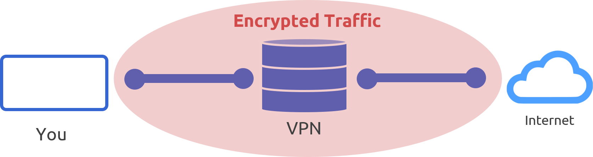

CopyTech
Virtual Private Network (VPN)
Zum ausdrucken (STRG + P)
Was ist ein VPN?
Ein VPN steht für "Virtual Private Network" und ist eine Technologie, die entwickelt wurde, um eine sichere und private Verbindung über das öffentliche Internet herzustellen. Es ermöglicht Benutzern, auf Ressourcen und Dienste zuzugreifen, als wären sie direkt mit einem privaten Netzwerk verbunden, selbst wenn sie sich an einem entfernten Standort befinden. VPNs sind nützlich, um die Privatsphäre zu schützen, die Online-Sicherheit zu erhöhen und auf geo-eingeschränkte Inhalte zuzugreifen.

Wie funktioniert ein VPN?
Ein VPN funktioniert, indem es eine verschlüsselte Verbindung zwischen dem Benutzergerät und einem entfernten Server herstellt. Die übertragenen Daten sind verschlüsselt und somit vor neugierigen Blicken geschützt. Der Benutzer wird über den Server ins Internet geleitet, wodurch seine tatsächliche IP-Adresse verborgen wird. Dies ermöglicht Anonymität und schützt vor Überwachung. VPNs dienen auch dazu, öffentliche WLAN-Verbindungen abzusichern und auf geo-eingeschränkte Inhalte zuzugreifen.
Verschlüsselung
Die Verschlüsselung ist ein zentraler Bestandteil eines VPNs. Sie gewährleistet, dass die übertragene Daten sicher und privat bleiben. VPNs verwenden verschiedene Verschlüsselungsprotokolle, um sicherzustellen, dass nur autorisierte Personen die Daten entschlüsseln können. Gängige Protokolle sind beispielsweise OpenVPN, L2TP/IPsec und IKEv2/IPsec. Die Verschlüsselung macht es nahezu unmöglich, den Datenverkehr abzufangen oder zu entschlüsseln, selbst wenn er über unsichere Netzwerke übertragen wird.
Nachteile
Trotz ihrer Vorteile haben VPNs auch einige Nachteile. Dazu gehören Geschwindigkeitsverluste, da die Daten verschlüsselt und über entfernte Server geleitet werden. Ein weiterer Nachteil ist die Tatsache, dass nicht alle Dienste und Websites mit einem VPN kompatibel sind. Darüber hinaus ist die Qualität von VPN-Diensten unterschiedlich, und die Wahl eines zuverlässigen Anbieters ist wichtig. Schließlich können VPNs in einigen Ländern eingeschränkt oder illegal sein, was rechtliche Konsequenzen haben kann.